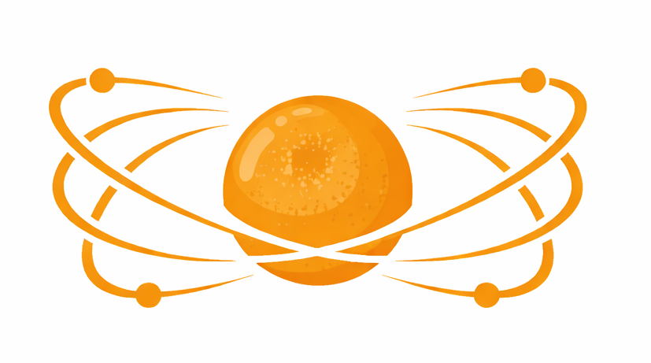

Welcome to Ring Labs (Lodi Branch)
At Ring Labs, communication is not merely transmission, but alignment across all nodes.
Our proprietary lattice-based signaling enables persistent continuity beyond conventional systems.
- Multi-Node Harmonic Relay
- Signal Continuity
- Distributed Synchronization
- Carrier Persistence
THIS FACILITY IS CLOSED. STOP COMING HERE.
You do not understand what this was.
If you are trying to find it, stop.